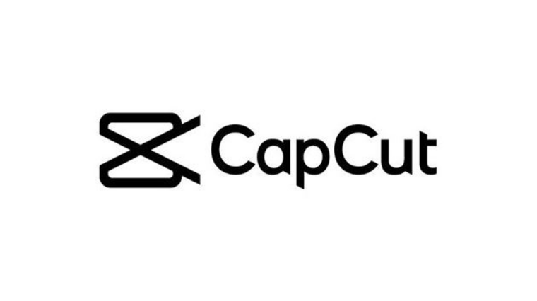

Cuales son las 5 aplicaciones mas famosas?
En un mundo cada vez más digitalizado, las aplicaciones móviles se han convertido en herramientas indispensables en nuestra vida diaria. Desde la comunicación y el entretenimiento hasta la productividad y la salud, estas aplicaciones han revolucionado la manera en que interactuamos con el mundo. En este artículo, exploraremos las cinco aplicaciones más populares en la actualidad.
5. Snapchat
Se lanzó en septiembre de 2011 pero no se ha popularizado hasta hace un año.
Su desarrollo estuvo a cargo de Snap Inc.
Una de las características más novedosas de Snapchat cuando se lanzó fue la introducción de los "Snaps": mensajes de fotos y videos que desaparecían después de ser vistos por el destinatario. Esta temporalidad y la idea de compartir momentos efímeros en lugar de contenido permanente rompieron con las normas establecidas por otras redes sociales, creando una experiencia más espontánea y privada
Lista de tecnologias usadas en su desarrollo
- Python: El lenguaje de programación principal utilizado para el desarrollo del backend de Snapchat, que maneja la lógica del servidor
- Objective-C y Swift: Estos lenguajes se utilizaron para desarrollar la aplicación en iOS
- Java: Utilizado para el desarrollo de la aplicación en Android, manejando la interfaz de usuario y la lógica del lado del cliente.
- C++: Utilizado en componentes de alto rendimiento, especialmente en la implementación de algoritmos para los filtros y lentes de realidad aumentada.
- OpenGL y Metal: Estas son API gráficas utilizadas para renderizar gráficos 3D y efectos visuales en tiempo real, como los filtros y lentes.
pagina oficial de Snapchat
4. CapCut

La app fue lanzada en China en el 2019, la aplicación se extendió rápidamente a nivel mundial en solo 4 años.
Capcut es una plataforma para la edición de videos creada por la compañía Bytedance, dueña también de TikTok
La característica más novedosa de CapCut es su capacidad para ofrecer edición de video avanzada y fácil de usar en dispositivos móviles, con un enfoque en herramientas automáticas y de inteligencia artificial (IA)
Lista de tecnologias usadas en su desarrollo
- Java y Kotlin: Para la versión de Android
- Objective-C y Swift: Para la versión de iOS
- C++: Utilizado para las partes del motor de procesamiento de video, que requieren alto rendimiento y eficiencia, como la codificación y decodificación de video
- FFmpeg: Una poderosa biblioteca multimedia que se utiliza para la manipulación y procesamiento de video y audio
- OpenGL ES: Esta API gráfica se utiliza para renderizar efectos visuales en tiempo real y aplicar filtros a los videos.
pagina oficial de CapCut
3. Whatsapp
WhatsApp fue lanzada el 3 de mayo de 2009.
WhatsApp fue lanzada por WhatsApp Inc.
La característica más novedosa de WhatsApp en su lanzamiento fue su enfoque en la mensajería instantánea gratuita a través de internet, utilizando redes Wi-Fi o datos móviles en lugar de los tradicionales SMS o MMS, que solían tener costos asociados
Lista de tecnologias usadas en su desarrollo
- Erlang: El lenguaje de programación principal utilizado para el desarrollo del backend de WhatsApp
- FreeBSD: Un sistema operativo basado en UNIX utilizado en los servidores de WhatsApp. FreeBSD es valorado por su rendimiento, estabilidad y seguridad
- C++: Utilizado para las partes del motor de procesamiento de video, que requieren alto rendimiento y eficiencia, como la codificación y decodificación de video
- Java: Utilizado para la versión de Android de la aplicación, manejando la interfaz de usuario y la lógica del lado del cliente
- Objective-C: Utilizado para la versión de iOS de la aplicación, antes de que Apple introdujera Swift.
pagina oficial de Whatsapp
2. Instagram
Instagram fue lanzado el 6 de octubre de 2010.
Instagram fue desarrollada por Instagram Inc
La característica más novedosa de Instagram cuando se lanzó fue su enfoque en filtros fotográficos que permitían a los usuarios aplicar efectos visuales a sus fotos de manera rápida y sencilla.
Lista de tecnologias usadas en su desarrollo
- Python: Utilizado para el backend de Instagram
- Django: Un framework web de alto nivel para Python que Instagram usó para manejar la lógica del servidor, la gestión de datos y la autenticación de usuarios.
- React: En el frontend, Instagram utiliza React, una biblioteca de JavaScript para construir interfaces de usuario interactivas, especialmente para mejorar la experiencia de usuario en la web.
- React Native : Para el desarrollo de las aplicaciones móviles
- Celery: Una biblioteca para la gestión de tareas y colas de trabajo asíncronas, que ayuda a procesar tareas en segundo plano y manejar cargas de trabajo pesadas.
pagina oficial de Instagram
1. Tiktok
TikTok fue lanzado el septiembre de 2016 bajo el nombre de Douyin en China, por la empresa ByteDance. La versión internacional de la aplicación, conocida como TikTok, fue lanzada en septiembre de 2017
TikTok fue desarrollada por la empresa ByteDance, una compañía tecnológica con sede en Pekín, China
La característica más novedosa de TikTok es su algoritmo de recomendación de contenido basado en inteligencia artificial, que personaliza el flujo de videos para cada usuario.
Lista de tecnologias usadas en su desarrollo
- Python: Utilizado en el backend para gestionar el procesamiento de datos y el desarrollo de funcionalidades del servidor
- Java y Kotlin: Lenguajes de programación utilizados para el desarrollo de la aplicación en Android
- TensorFlow y PyTorch: Frameworks de aprendizaje automático utilizados para el desarrollo de algoritmos de recomendación y personalización de contenido, así como para mejorar la detección de contenido y la generación de efectos visuales.
- Redis: Utilizado para almacenamiento en caché y procesamiento de datos en memoria, ayudando a gestionar las cargas de trabajo y mejorar el rendimiento de la aplicación
pagina oficial de tiktok